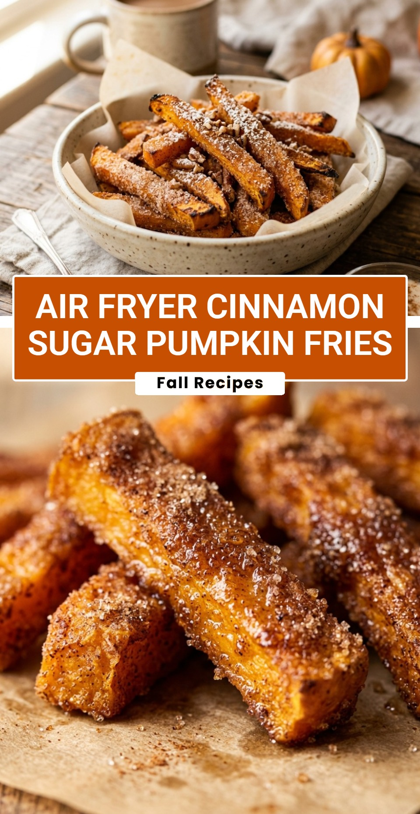

Air Fryer Cinnamon Sugar Pumpkin Fries
October 18, 2026

Fall is finally here, and nothing says cozy like the smell of pumpkin and spice filling your kitchen. While most people reach for pumpkin pie or lattes, these Air Fryer Cinnamon Sugar Pumpkin Fries are a game-changer. They offer a unique way to enjoy fresh pumpkin that is both nutritious and incredibly delicious.
Recipe Information
Prep Time: 15 minutes
Cook Time: 15 minutes
Total Time: 30 minutes
Servings: 4
Difficulty Level: Easy
Nutrition Information
Calories per serving: 115 kcal
Protein: 1.5g
Carbohydrates: 22g
Fat: 3.5g
Fiber: 3g
Sugar: 14g
Sodium: 65mg